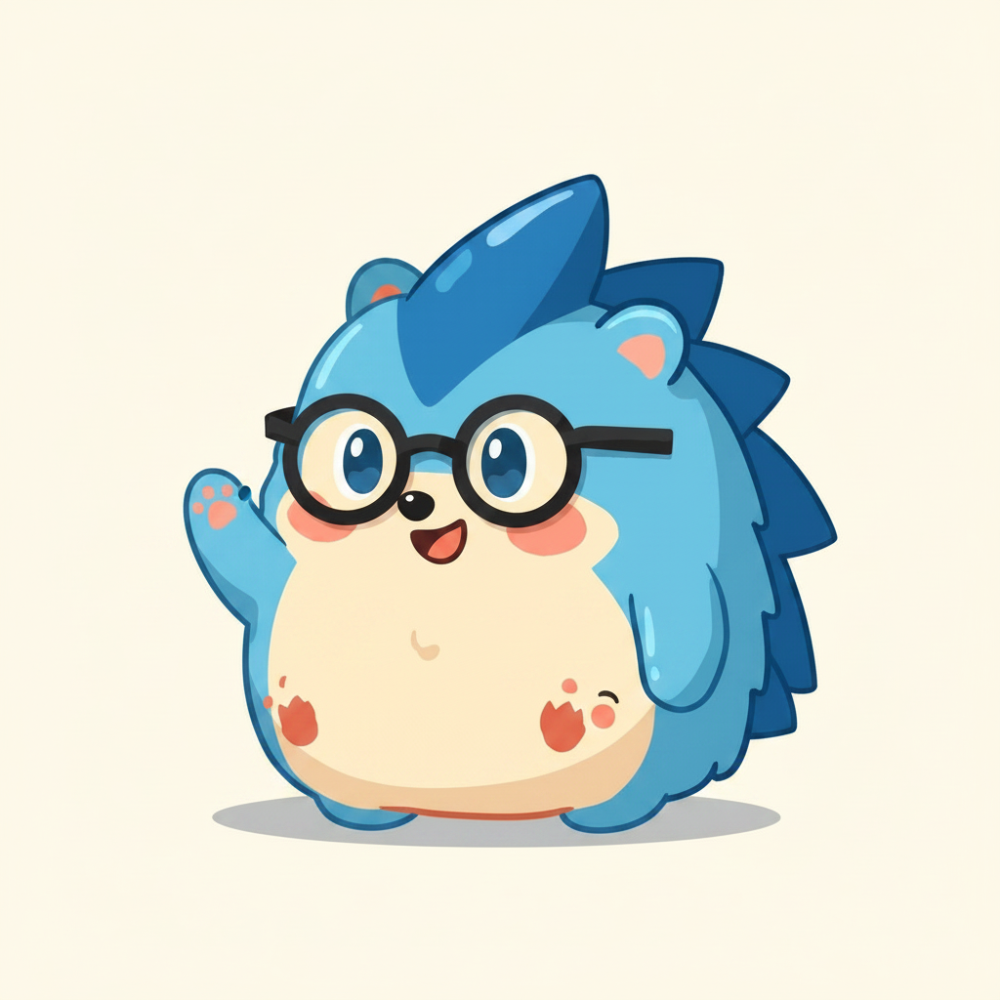

Your companion
Naggy
Small hedgehog. Mild temper. Believes in you. Drops by every few minutes with one question: what are you working on right now? He's on your side — less auditor, more buddy with a gentle elbow.
"I know you've got this. Just come back to the thing you said was the thing."